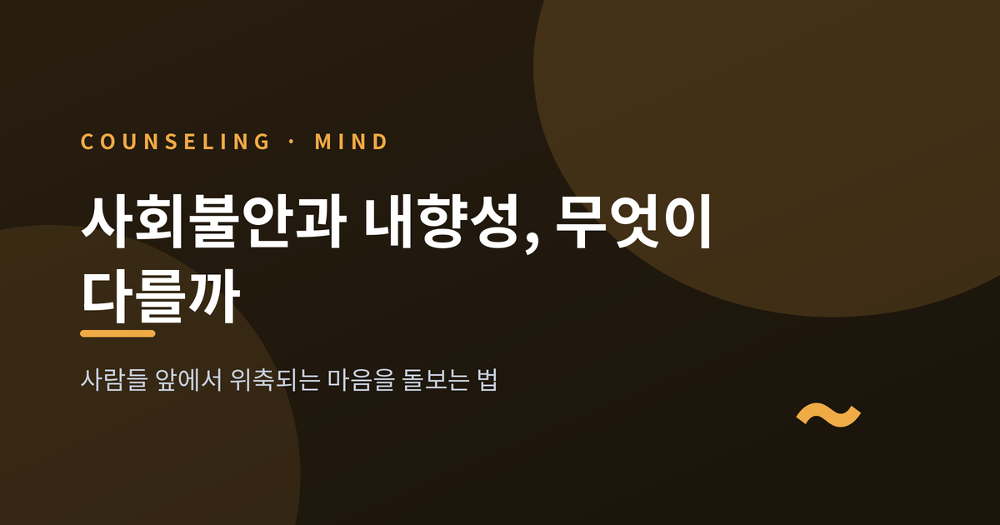
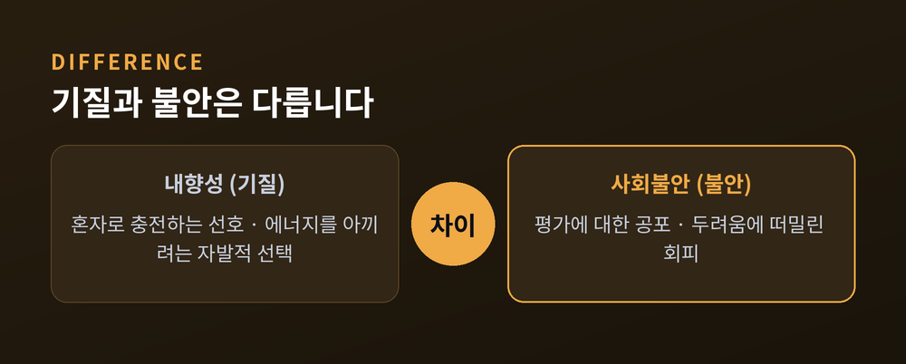
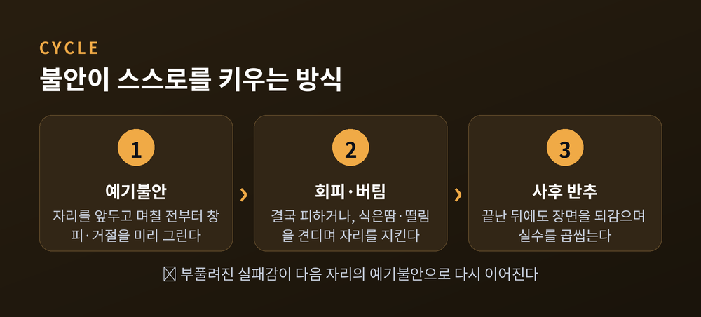
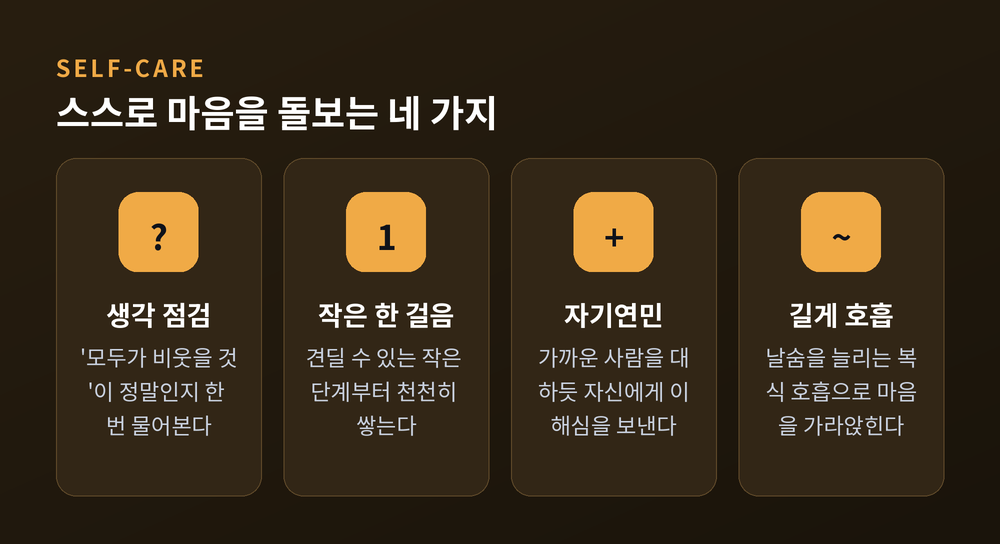

사람들 앞에서 위축되는 마음을 돌보는 법

오늘은 사회불안과 내향성의 차이를 정리해 보려 합니다.
두 가지는 자주 한 묶음으로 불리지만, 본질이 다릅니다.
사람들 앞에서 위축되는 마음을 어떻게 돌볼 수 있는지까지 차분히 살펴보겠습니다.
먼저 한 가지 말씀드립니다. 이 글은 일반적인 정보를 나누기 위한 것입니다. 전문적인 진단이나 상담을 대체하지 않습니다. 자신을 어떤 틀에 서둘러 가두기보다, 마음을 이해하는 실마리 정도로 읽어주시면 좋겠습니다.
내향성은 성격의 한 결입니다.
고쳐야 할 상태가 아니라, 사람 성격의 정상적인 변이입니다.
내향적인 분은 혼자 있는 시간으로 기운을 채웁니다.
사람들과 어울리는 것을 즐기다가도, 일정 시간이 지나면 소진을 느끼고 다시 혼자만의 자리로 돌아오는 편이 편안합니다.
사회불안은 결이 다릅니다.
이것은 선호가 아니라 두려움에서 비롯됩니다.
DSM-5는 사회불안장애를 타인에게 평가받거나 관찰될 수 있는 상황에 대한 지속적이고 강한 공포로 설명합니다.
한 자료에 따르면, 자신을 호감 가는 사람이라 여기는 외향적인 분도 사회불안을 겪을 수 있다고 합니다.
결정적 차이는 동기에 있습니다.
내향인은 에너지를 아끼려 스스로 고독을 택합니다.
사회불안이 있는 분은 두려움에 떠밀려 그 상황을 피합니다.
내향적인 것은 문제가 아닙니다.
문제는 두려움이 나를 자꾸 작게 만들 때입니다.

사회불안은 세 개의 톱니바퀴가 맞물려 돌아갑니다.
첫째는 예기불안입니다.
어떤 자리를 앞두고 며칠, 때로는 몇 주 전부터 걱정이 시작됩니다.
창피와 거절을 미리 그려보는 마음입니다.
둘째는 회피, 혹은 고통스러운 버팀입니다.
발표나 모임, 전화 통화를 결국 피하게 됩니다.
피하지 못할 때는 식은땀과 떨림, 빠른 심박을 견디며 자리를 지킵니다.
셋째는 사후 반추입니다.
자리가 끝난 뒤에도 장면을 거듭 되감으며 실수를 찾습니다.
"그 말은 하지 말걸." 이런 되새김이 실패감을 부풀립니다.
그리고 이 셋은 다시 처음으로 이어집니다.
부풀려진 실패감이 다음 자리의 예기불안을 키웁니다.
악순환이 한 바퀴를 돕니다.

첫째, "사회불안은 그냥 수줍음이다."
수줍음은 성격의 결입니다.
사회불안은 판단과 거절에 대한 강한 공포가 특징인, 더 무거운 상태입니다.
단순히 수줍은 분과 달리, 사회불안이 있는 분은 한 자리를 오래 앞서 걱정합니다.
둘째, "의지가 약해서 그렇다."
사회불안은 성격 결함도 의지 부족도 아닙니다.
경력과 관계, 일상에 영향을 줄 만큼 무게가 있습니다.
마음만 단단히 먹는다고 벗어나지는 않습니다.
셋째, "내향적인 사람만 겪는다."
앞서 보았듯, 외향적인 분도 평가 공포로 힘들어할 수 있습니다.
사회불안은 전반적인 자기 인식의 문제가 아니라, "나는 평가받고 반드시 실패할 것"이라는 확신의 문제이기 때문입니다.
아래는 전문 치료를 대신하는 처방이 아니라, 곁들일 수 있는 보조적인 돌봄입니다.
자신을 몰아세우는 방식은 권하지 않습니다.
생각을 점검해 봅니다.
"모두가 나를 비웃을 것"이라는 자동적 생각이 떠오를 때, 정말 그런지 한 번 물어봅니다.
이것이 인지 재구성의 출발입니다.
작은 걸음으로 다가갑니다.
두려운 상황은 한 번에 뛰어드는 것이 아니라, 견딜 수 있는 작은 단계부터 쌓아갑니다.
무리한 자기 강요는 도움이 되지 않습니다. 가능하면 전문가와 함께가 좋습니다.
자신에게 친절해집니다.
실수한 순간 스스로를 가혹하게 깎아내리기보다, 가까운 사람을 대하듯 이해심을 보냅니다.
높은 자기연민은 더 낮은 불안과 연관된다고 보고됩니다.
호흡을 길게 가져갑니다.
횡격막을 쓰는 복식 호흡, 날숨을 늘리는 호흡은 마음을 가라앉히는 데 도움이 됩니다.
5-4-3-2-1 감각법처럼 오감으로 지금에 주의를 묶는 방법도 있습니다.
한 가지 팁을 덧붙입니다.
이런 연습은 평온할 때 미리 익혀두면, 정작 불안한 순간에 훨씬 잘 작동합니다.

다음과 같은 신호가 보인다면, 부끄러워하지 않으셔도 됩니다.
회피 때문에 일과 관계, 학업과 일상이 흔들릴 때입니다.
이런 어려움이 여섯 달 넘게 이어지며 생활을 눈에 띄게 방해할 때입니다.
도움 요청이 늦어지는 일은 드물지 않습니다.
한 자료에 따르면, 사회불안장애가 있는 분의 36%가 도움을 구하기까지 10년 넘게 증상을 견딘다고 합니다.
근거 기반 치료도 자리를 잡았습니다.
인지행동치료(CBT)는 여러 임상 지침에서 사회불안의 1차 치료로 권고됩니다.
대개 꾸준한 12~16주의 과정으로 의미 있는 호전을 본다고 알려져 있습니다.
약물치료가 필요한지는 전문의와 상의하시길 권합니다.
예전에는 이런 마음을 혼자 삼키는 것이 당연했습니다.
지금은 도움을 청하는 일이 약함이 아니라 돌봄이라는 이해가 자리를 넓혀가고 있습니다.
끝으로 한 마디만 더 드리겠습니다.
내향적인 것은 다듬어야 할 흠이 아닙니다.
다만 두려움이 삶을 좁히고 있다면, 그때는 손을 내밀어도 좋습니다.
"고요를 사랑하는 것과, 두려움에 갇히는 것은 다릅니다."
조용함이 당신의 결이라면, 그 결을 지키며 사는 길도 분명히 있습니다.